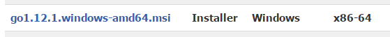
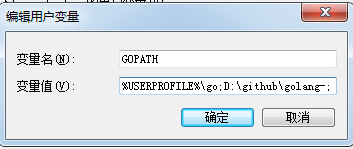
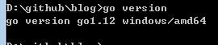
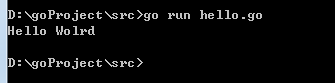
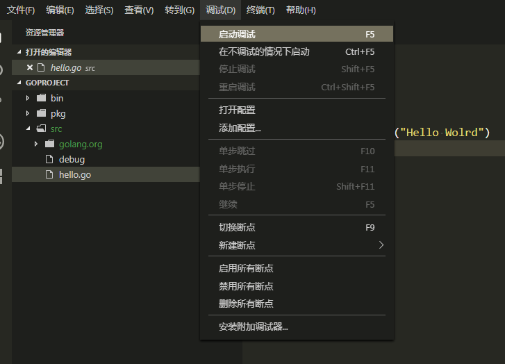
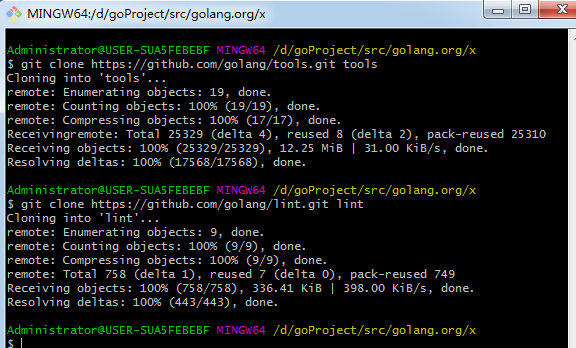
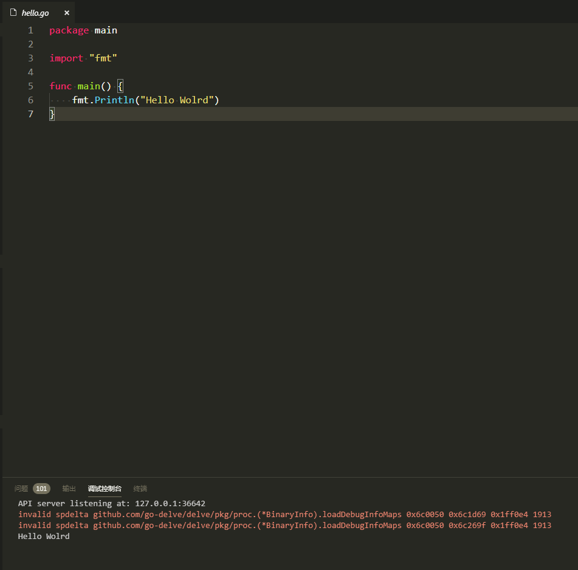
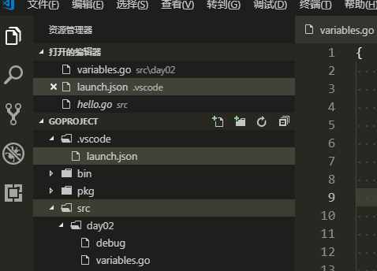

之前讲述过linux环境下Go语言开发环境搭建，这次简述下windows的搭建以及vscode配置
windows环境搭建
同样去https://studygolang.com/dl下载windows环境go安装包
直接下载msi安装

双击安装，选择安装位置。
Golang在安装完成后会在系统变量中自动添加一个GOROOT变量，这个变量就是Golang的安装目录。
还会在 Path变量中自动添加一个 D:\Go\bin 变量，这是Golang的安装目录下的bin目录
在D盘新建文件夹github\golang-(读者可以根据喜好自己创建文件夹)，在golang-中在新建三个子目录：
src(此目录用来存放项目源代码)
pkg(此目录用来存放项目编译后的生成文件)
bin(此目录用来存放编译后生成的可执行文件)
在回到系统环境变量中，手动添加 GOPATH 变量，值为：D:\github\golang-

在找到Path变量，然后点击编辑按钮，添加D:\github\golang-\bin
打开命令行（windows键+R，输入cmd点击确定），输入命令 go version后显示出golang的版本则配置成功

在src下创建一个hello.go文件，代码如下
1 | package main |
运行该文件，可以看到效果

到此为止windows环境搭建好了。
vscode 环境搭建
由于vscode编译go需要一些目录和包，自动点击运行或者点击F5

提示缺少安装包，vscode自动安装，但是安装仍然失败
解决办法，在自己的项目目录(我的目录)D:\github\golang-\src下创建golang.org，在golang.org内创建x，
在D:\github\golang-\src\golang.org\x内执行git命令
1 | git clone https://github.com/golang/tools.git tools |

接下来进入vscode，点击hello.go文件，运行F5，就可以看到效果了

设置缩进格式和空格缩进
command + shift + p ，然后输入indent usingspace 并可以修改 sapce 大小，将tab替换为space的大小可以修改设置里的 tabSize 参数
有时候为了方便，可能要在src下建立个单独的文件夹，文件夹内再建立go文件
如下图的variables.go,是在src/day02目录下。

直接运行F5是无法通过的，需要修改launch.json，
将program配置为${workspaceRoot}/src/day02即可。workspaceRoot表示打开的文件夹，我这里是D:\github\golang-。
launch.json配置如下
1 | { |
这样再次运行就可以了。
谢谢关注我的公众号